‘Ciff Temple’은 ‘Z축을 활용한 입체적인 동선’과 ‘목적지가 존재하는 선형적 구조’를 핵심 목표로 설계한 3D 잠입 액션 게임 레벨입니다. 유저는 다양한 높이와 구조로 이루어진 레벨을 탐험하며 자신만의 루트를 찾아내고 잠입과 맨틀링 시스템을 활용하여 최종 목적지에 도달하는 경험을 하게 됩니다. 저는 비트 차트와 긴장 곡선, 평면도를 활용해 레벨이 유저에게 제가 의도한 경험과 성취감을 제공할 수 있도록 디자인했습니다.
Unreal Engine 5.4MS OfficeGPT-4oGemini 2.5Draw.io
핵심 디자인 목표 및 전략
저는 이 프로젝트를 진행하면서 크게 두 가지의 목표를 잡았습니다.
높이(Z축)을 활용한 입체적 공간 경험 극대화
선형적 구조를 통한 동기 부여와 성취감 극대화
제가 실무에서 제작했던 월드 레벨과는 달리 명확한 시작과 끝이 있는 선형 구조의 던전 레벨을 제작해, 유저가 모든 구간에서 도달해야 하는 목적지를 뚜렷하게 인지할 수 있도록 유도했습니다. 위의 목표를 달성하기 위해 저는 비슷한 목표와 경험을 제공하는 다른 게임의 레벨을 조사했습니다.
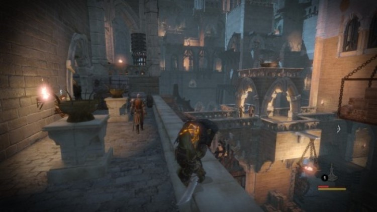
Styx: Master of Shadows
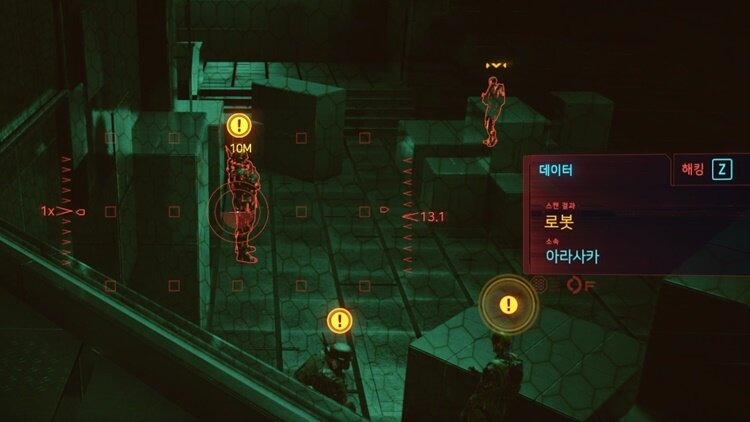
Cyberpunk 2077
첫 번째 레퍼런스 게임은 ‘Styx: Master of Shadows’입니다. 해당 게임의 레벨은 마법과 같은 특수 능력에 크게 의존하지 않고 레벨 구조 자체를 유저가 탐색하며 길을 찾아 나가는 재미가 있었습니다. 이를 차용해 엄폐물의 위치나 우회로 등 레벨 디자인을 통한 긴장감을 유발하는 방식을 학습했습니다. 또한, ‘Styx’에선 다소 아쉬웠던 일부 구간의 늘어지거나 부담스러웠던 페이싱 조절을 개선하여 ‘쉼터’ 구간과 ‘긴장’ 구간을 명확히 구분해 유저의 감정 곡선을 조절하고자 했습니다.
두 번째 레퍼런스 게임은 ‘Cyberpunk 2077’입니다. 이 게임은 잠입 액션 게임은 아니지만, 하나의 목표에 대한 다양한 접근 루트를 제공하는 디자인을 차용했습니다. 선형적인 구조의 레벨 안에서도 유저가 스스로의 선택에 따라 자신만의 돌파 루트를 만들 수 있는 자유도를 제공하고 싶었습니다.
레벨 디자인 프로세스
컨셉 시각화 및 비트 차트 작성
Midjourney와 Gemini를 활용해 프로젝트의 전체적인 컨셉을 시각화 했습니다. 전반적인 레벨 구조는 ‘Styx’를 차용했기 때문에, 개방적이고 중세 풍의 디자인을 레벨의 핵심 테마로 선정했습니다. 이를 바탕으로 유저가 겪게 될 주요 경험의 흐름을 정리하기 위해 비트 차트를 작성하고 러프한 감정 곡선을 그렸습니다.
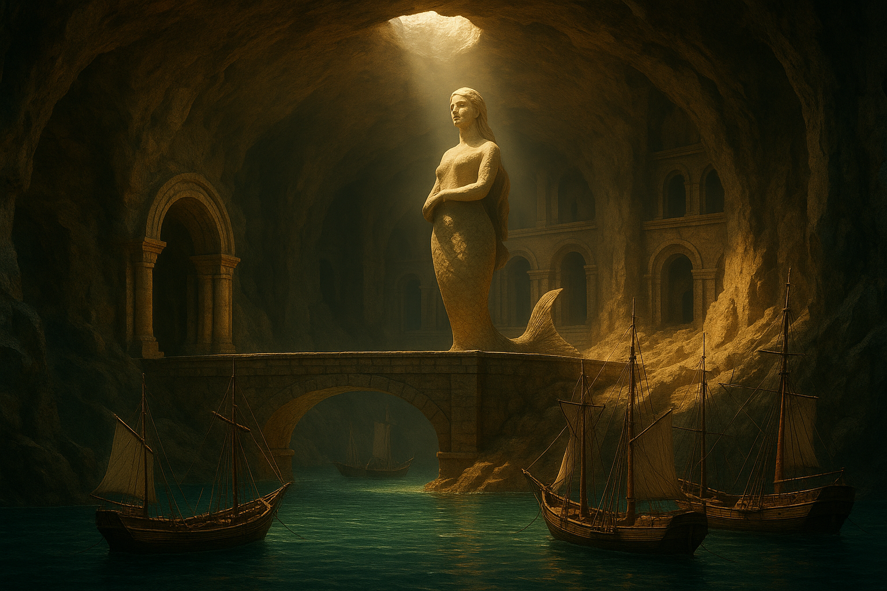
Midjourney로 제작한 컨셉 아트
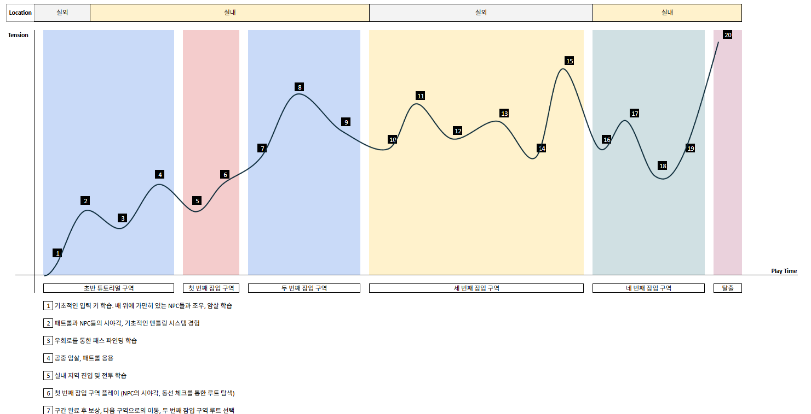
작성된 비트 차트
2D 평면도 제작
작성된 비트 차트를 기반으로 공간을 구역화하고 전체적인 동선과 상호작용 요소들을 배치한 2D 평면도를 제작했습니다. 이 단계에서 비트 차트와 평면도를 오가며 제 아이디어와 주고자 하는 경험들을 구체화했습니다. 특히, 개선하고자 했던 페이싱 조절에 신경 쓰며 각 구역의 역할을 보다 명확히 구분하여 평면도를 제작했습니다.
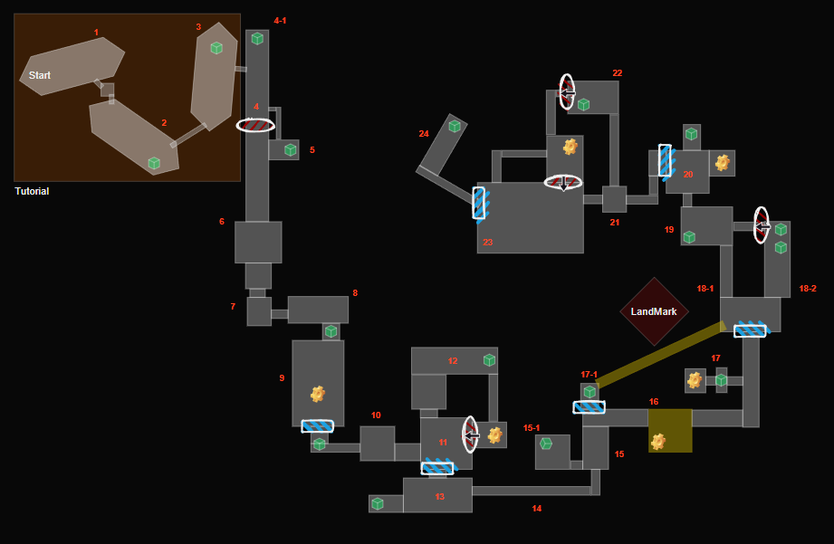
Draw.io를 활용한 2D 평면도
블록아웃 및 3D 공간감을 위한 목업
Unreal Engine 5의 박스 그리드 툴을 활용하여 평면도로 제작한 레벨을 3D로 구현했습니다. 이 과정에서 평면도에선 미처 고려하지 못했던 시야각과 엄폐물의 위치, 조명, Z축의 활용 등을 재점검할 수 있었습니다.
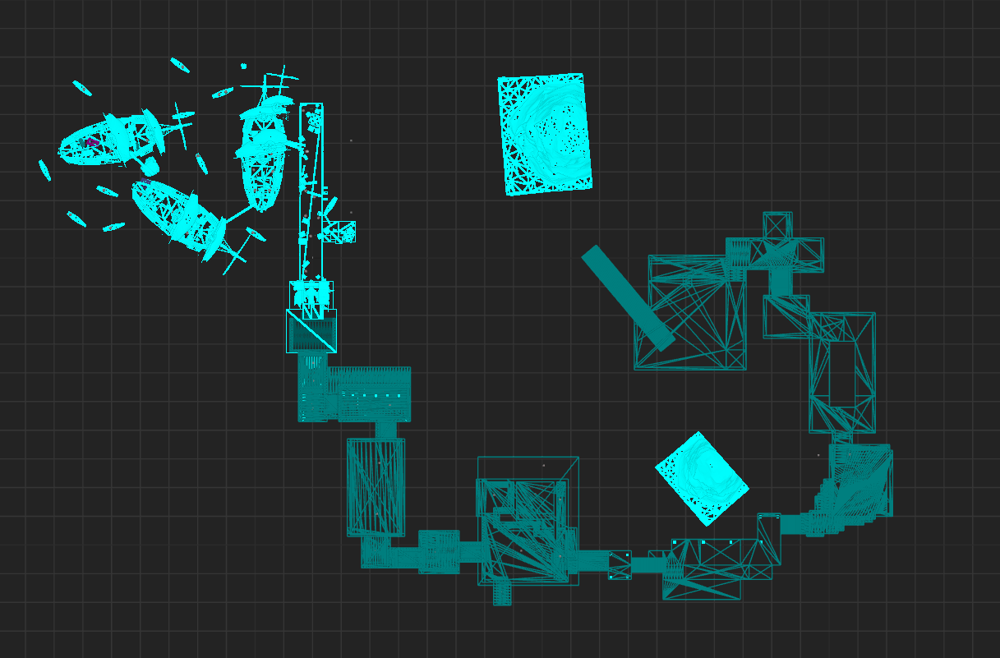
Unreal Engine 5를 이용한 3D 블록아웃
그레이 박싱 및 핵심 메카닉 구현
박스 그리드 툴로 제작된 목업 레벨 위에 디테일을 추가할 수 있는 그레이박싱을 진행했습니다. 이 과정에선 잠입 경험에 핵심적인 기능을 리스트업 하고 각 구역에 배치할 핵심 경험을 위한 기술적 구현이 필요한 사항들을 보기 좋게 정리하는 과정을 거쳤습니다.
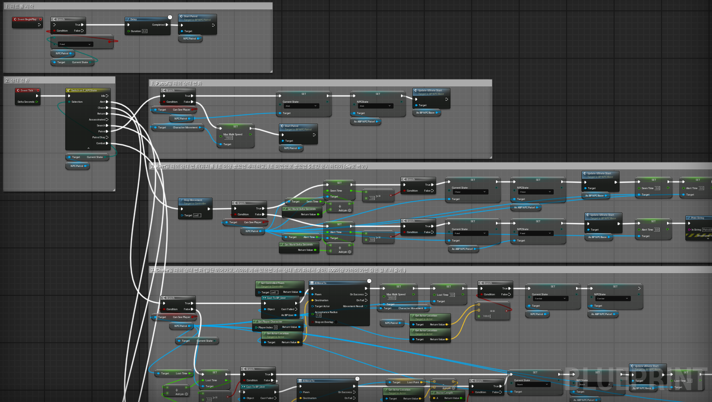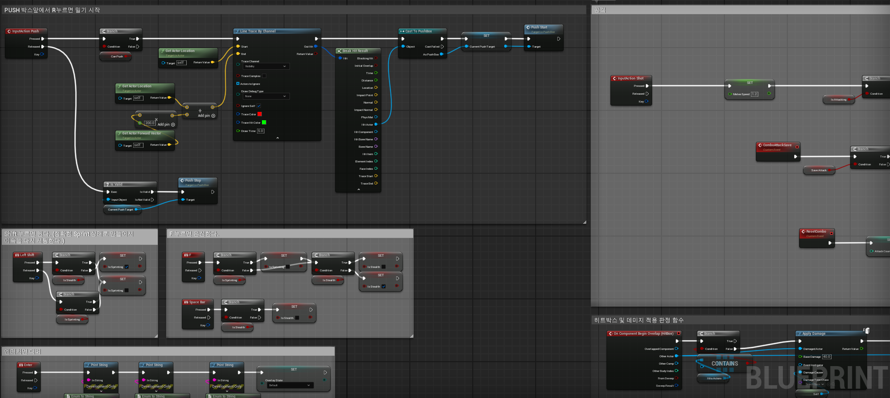
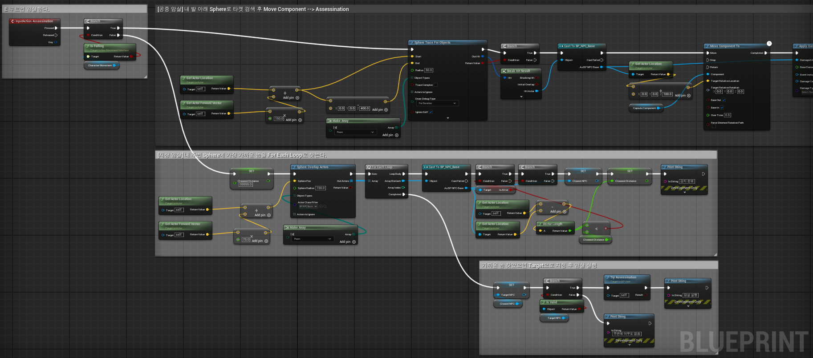
핵심 메카닉: 맨틀링핵심 메카닉: 잠입
플레이 테스트 및 피드백 반영 수정
혼자 진행하는 프로젝트다 보니, 레벨을 제작할 때마다 끊임없는 자기 고뇌와 수정이 있었습니다. 이를 해결하기 위해 제3자에게 플레이 영상을 공유하면서 객관적인 피드백을 수용하고, 제시된 다양한 피드백을 바탕으로 세세한 부분과 의도치 않았던 경험들을 배제해가며 레벨을 다듬었습니다.
주요 레벨 구간 상세 분석
두 번째 잠입 구역
디자인 의도
이 구간의 목표는 ‘Cyberpunk2077’에서 느꼈던 루트 선택의 재미를 제공하는 것이었습니다. 단순히 여러 개의 길을 제시하는 것이 아닌, 각 선택이 갖는 의미를 뚜렷한 리스크와 보상으로 이어지게 제작하여 유저 스스로 자신만의 돌파 루트를 찾을 수 있는 경험을 제공하고자 했습니다.
공간 구조 및 특징
구간 목표를 달성하기 위해 저는 성격이 다른 두 개의 진입로와 두 개의 보상 공간을 설계했습니다. 각 진입로의 특성과 가지고 있는 리스크/보상은 다음과 같습니다.
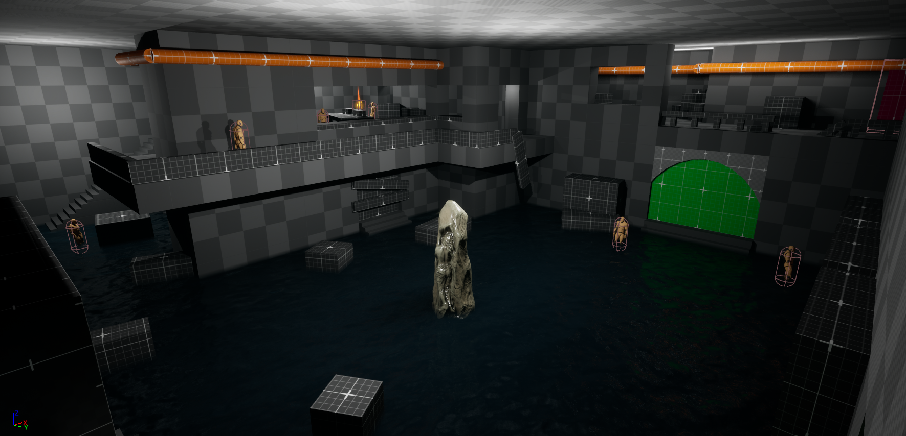
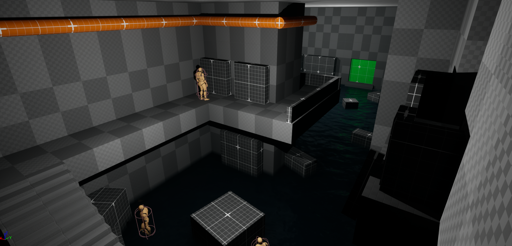
루트 A: 낮은 지대에서 구역에 진입, 적들에게 노출될 개활지를 마주하며 위험을 감수하고 루트를 찾아 나서야 하는 진입로입니다. 단, 루트 A의 경우, 해당 구간의 최종 목표 지점을 직관적으로 가장 먼저 확인할 수 있고, 표시된 안내형 오브젝트들을 통해 동선 계획 수립을 용이하게 진행할 수 있다는 장점이 존재합니다.
루트 B: 높은 위치의 마천루로 진입하는 이 공간은, 루트 A보다 안전하고, ‘두드려보고’ 건널 수 있는 여유를 제공합니다. 단, 루트 B의 경우, 제한된 시야로 인해 한정된 공간만 미리 확인할 수 있으며, 최종 목표를 어렴풋이 ‘예상’만 가능하도록 만들어, 직접 레벨을 진행해가며 최종 목적지를 확인해야 한다는 단점이 존재합니다.
다음은 확장형 보상 공간입니다. 레벨을 진행하면서 유저의 적극성 및 관찰력에 따라 추가적인 보상을 획득할 수 있는 공간들을 마련하여 유저의 승부욕과 성취욕을 자극하도록 설계했습니다.
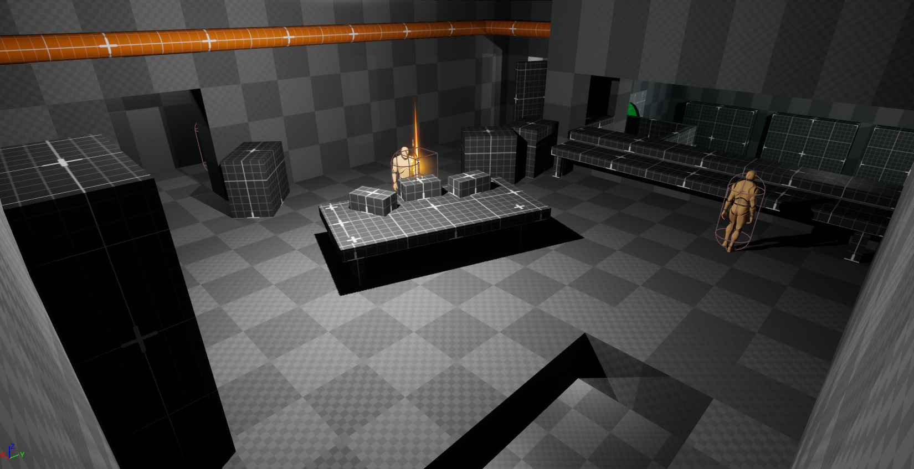
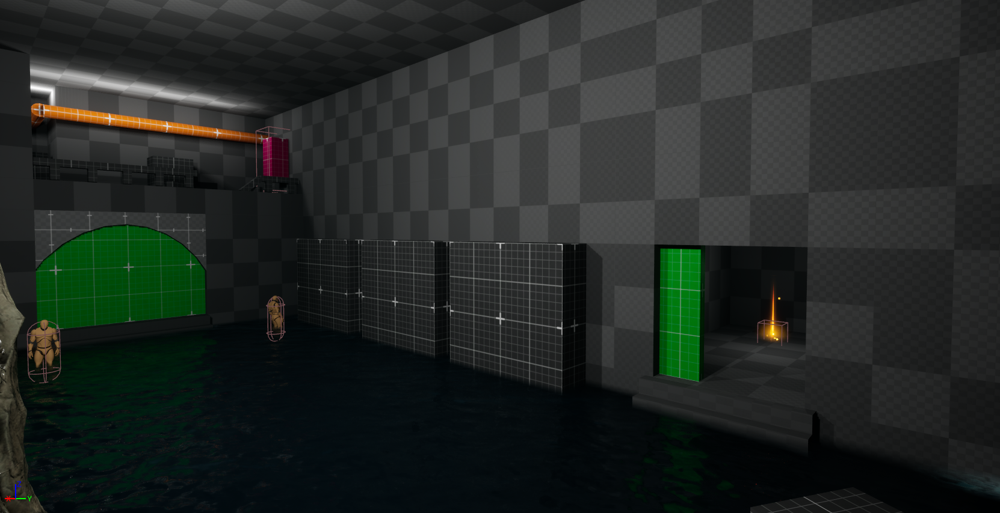
첫 번째 보상 공간: 사무실 사무실은 유저가 자연스럽게 파악할 수 있는 ‘숏컷’을 굳이 포기하고 좁은 사무실로 들어와 잠입을 진행했을 때 발견할 수 있는 보상 공간입니다. 이 공간은 탐험 욕구가 가득한 유저들의 기대를 충족시키며 한정된 레벨 속에서도 풍부한 경험을 제공하기 위해 제작되었습니다.
두 번째 보상 공간: 비밀 창고 메인 목표인 문을 여는 스위치를 작동시켰을 때 개방되는 공간으로, 메인 목표에만 집중하지 않고 다양한 요소들을 살펴봤던 유저에게 ‘예상할 수 있는 재미’, 그리고 그 예상이 적중했을 때의 쾌감을 제공하고자 제작되었습니다.
의도된 플레이 경험 (Intended Player Experience)
이 레벨을 통해 유저는 자신이 선택한 진입로에 따라 달라지는 레벨을 경험을 하게 됩니다. 이처럼 저는 유저의 선택이 단순한 길의 차이가 아닌 레벨을 플레이하며 느끼는 경험과 감정선의 차이로 이어지도록 레벨을 디자인했습니다.
거중기 등반 구간
디자인 의도 (Design Intent)
이 구간은 플레이어가 특정 시스템, 즉 '맨틀링'을 적극적으로 활용하여 길을 찾아 나서는 운동감각적 재미(Kinesthetic Fun)를 극대화하기 위해 설계되었습니다. 단순한 이동을 넘어, 지형 자체가 하나의 거대한 퍼즐이자 도전 과제가 되도록 하여, 플레이어가 스스로 길을 '개척'하고 '쟁취'하는 강렬한 성취감을 느끼게 하는 것을 목표로 삼았습니다.
공간 구조 및 특징 (Layout & Features)
초기 과제 제시 (The Initial Problem): 플레이어가 구역에 진입하는 즉시, 다음 구역으로 향하는 출구가 명확하게 보입니다. 하지만 출구로 향하는 길은 의도적으로 끊어져 있어,물리적으로 접근이 불가능함을 즉시 인지시킵니다.
해결의 열쇠 (The Key to the Solution): 끊어진 길 위에는 거대한 바위를 매단 '거중기'가 배치되어 있습니다. 특히 바위와 거중기를 연결하는 '밧줄'은 다른 오브젝트와 구분되는 특별한 재질(Material)로 강조하여, 플레이어가 "저 밧줄을 끊으면 무슨 일이 생길 것 같다"는 상호작용의 단서로 활용하도록 디자인했습니다.
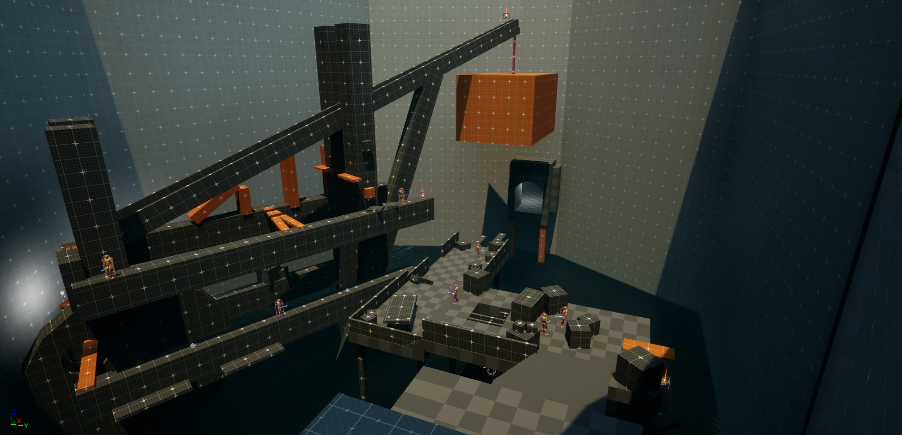
핵심 상호작용 - 거중기 등반로 (The Core Interaction - The Crane Path): 거중기 자체가 하나의 복잡한 정글짐(Jungle Gym)처럼 설계되었습니다. 단순히 맨틀링만 반복하는 것이 아니라, 좁은 발판을 밟고, 장애물을 뛰어넘고, 낮은 구조물 아래로 숙여서 통과하는 등 다채로운 조작을 요구하는 구간을 순차적으로 배치하여 지루할 틈 없는 등반 경험을 제공합니다.
의도된 플레이 경험: 3막 구조의 여정 (The Intended Player Experience: A Three-Act Journey)
1막 - 잠입과 관찰 (Act 1 - Stealth and Observation): 초반부는 기존과 같이 NPC의 순찰을 피해 잠입하는 긴장감을 유지합니다. 동시에 플레이어는 끊어진 길과 거중기를 관찰하며, 앞으로 무엇을 해야 할지, 어떻게 저 거중기에 도달할 수 있을지를 고민하게 됩니다.
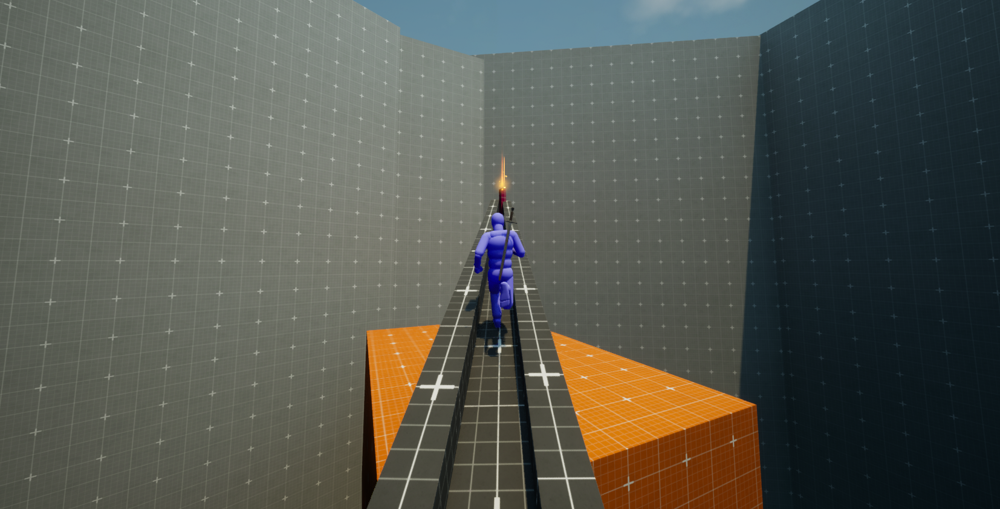
디자인 의도 (Design Intent)
이 구간은 유저가 ‘맨틀링’ 시스템을 적극적으로 활용하여 길을 찾는 ‘패스 파인딩의 재미’를 목표로 제작되었습니다. ‘맨틀링 시스템’을 단순한 이동 시스템이 아닌 레벨이라는 하나의 거대한 퍼즐을 풀기 위한 핵심 시스템으로 느껴질 수 있도록 디자인했습니다.
공간 구조 및 특징
유저가 해당 구역에 진입하는 즉시 다음 구역으로 향하는 출구가 명확하게 보이도록 설계했습니다. 하지만 출구로 향하는 다리를 의도적으로 끊어, 물리적으로 접근이 불가능함을 인지시켰습니다. 그리고 그 끊어진 길 위에 거대한 바위를 매단 ‘거중기’를 배치했고, 바위와 거중기를 연결하는 밧줄에 눈에 띄는 메테리얼을 입혀 단서를 남김으로써, ‘밧줄을 끊어야겠다.’라는 유저의 동기를 자연스럽게 유발할 수 있도록 설계했습니다. 또한, 거대한 거중기를 하나의 맨틀링 퍼즐로 설계하여 단순한 맨틀링의 반복이 아닌 좁은 발판을 밟거나, 장애물을 넘거나, 간단한 패트롤을 피하거나 낮은 구조물 아래를 숙여서 통과하는 등 다채로운 조작을 요구하며 풍부한 경험을 제공할 수 있도록 설계했습니다.
의도된 플레이 경험
저는 해당 구역을 간단한 3개의 파트로 나누어 제작했습니다.
잠입과 관찰
- 초반부는 기존과 같이 NPC의 순찰과 시야를 피해 잠입하는 긴장감을 유지합니다. 그와 동시에 유저는 끊어진 길과 거중기를 통해 해당 구간의 핵심 목표를 파악하고 어떤 루트를 밟아야 할지 고민합니다.
거중기 등반
- 거대한 거중기에 올라타면서 본격적인 맨틀링 구간을 진행합니다. 유저는 다음으로 올라갈 지점을 끊임없이 탐색하고, 다양한 구간들을 통과하며 길을 개척해 나가는 패스 파인딩의 재미를 경험합니다.
짜릿한 해방 구간
- 집중력과 스트레스를 유발하는 맨틀링 구간이 종료되면 유저에게 거중기의 끝에서 방해 없이 질주할 수 있는 짧은 ‘해방의 순간’을 제공합니다. 그 후, 밧줄을 끊어 거대한 바위를 떨어뜨리고 유저가 직접 자신의 행동으로 다음 구역을 잇는 길을 쟁취했다는 경험과 성취감을 제공합니다.
회고 (Retrospective)
Cliff Temple 프로젝트를 통해, ‘Z축을 활용한 입체적인 동선’과 ‘선형적인 구조의 재미’라는 핵심 목표 두 가지를 성공적으로 구현할 수 있었습니다. 나아가 레벨 아이디어를 비트 차트와 감정 곡선, 2D평면도를 활용해3D 공간으로 구체화하는 과정은 레벨 디자이너로서 한 단계 성장할 수 있었던 계기가 되었습니다.
해당 프로젝트를 진행하면서 쿼터뷰 게임의 레벨을 제작할 때와는 달리 제한된 시야 속에서 유저를 어떤 방식으로 이끌어 가는 지와 그 과정 속에서 유저에게 경험을 제공할 수 있는 다양한 방식들을 학습할 수 있었습니다. 또한, 공간의 밀도가 3D 환경에서 유저에게 어떤 느낌으로 다가갈 수 있을지와 프로젝트의 방향에 있어서 초기 컨셉 및 평면도의 역할이 얼마나 중요한지 체감할 수 있었습니다.